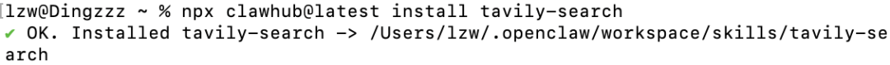
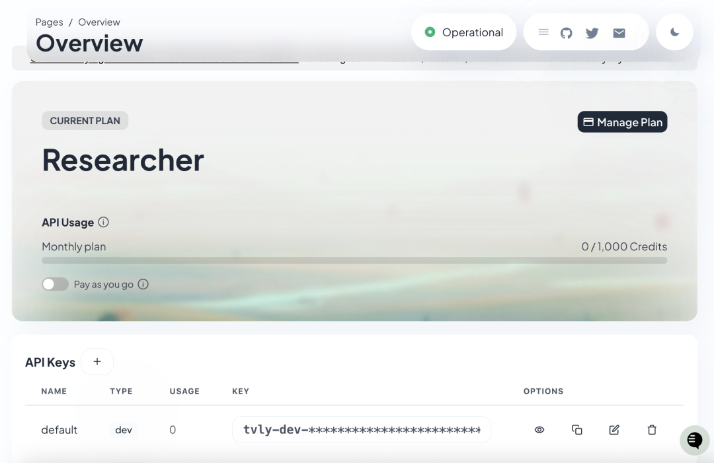
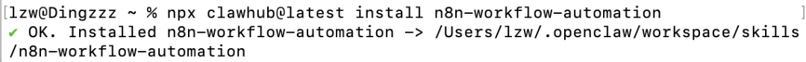
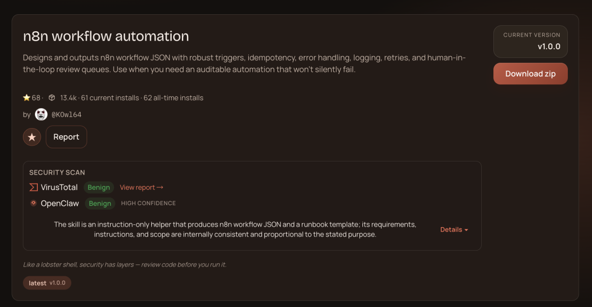
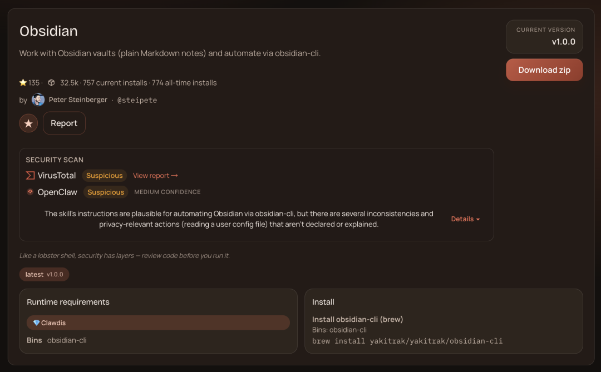
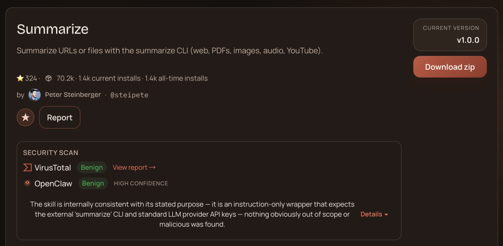
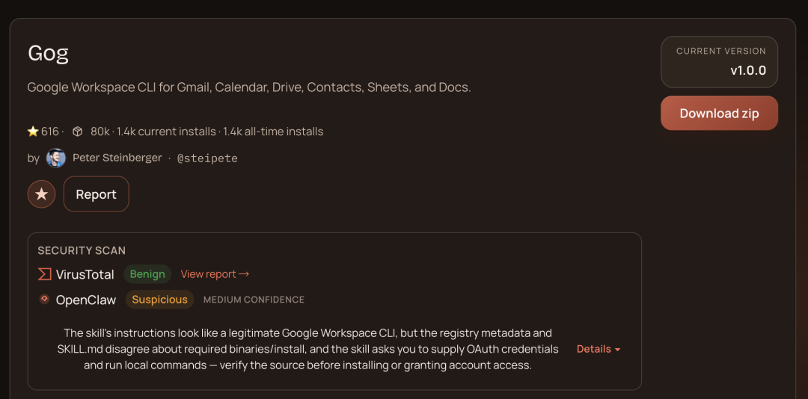

闻乐 发自 凹非寺
量子位 | 公众号 QbitAI
太热闹了。
上门安装送推拿，这是什么新的搞钱方式？？
OpenClaw已经火爆到带来了一种新的商业模式（doge）。
话说，花几百块钱买个安装服务值吗？
我只能说……新手5分钟就能吃上这口 肉。
肉。
官方推荐最低门槛只需要一行命令：
curl -fsSL https://openclaw.ai/install.sh | bash
脚本会自动检测系统、安装Node.js 依赖、部署OpenClaw并启动配置引导。
这时候只要你有模型API，基本都能安装成功。
热闹归热闹，但这龙虾装完除了聊天还能帮我干啥？哪些技能是刚需？
今天咱就来扒一扒ClawHub上最最实用的几个Top技能。
每个技能都附带用途和安装方式，速来围观！！
必备实用技能
Tavily Search
Tavily是专门为AI Agent优化的搜索API，比普通浏览器更懂语义，能返回结构化结果，还没广告。
用途：实时查最新论文、新闻、产品价格、航班信息等。
安装方法：
npx clawhub@latest install tavily-search

用法：ClawHub搜Tavily Search，拿到API key，免费额度就够日常用。

n8n Workflow Automation
n8n是开源自动化工具，这个技能让OpenClaw直接调n8n节点，实现跨App联动。
用途：邮件来了，自动存到Notion，触发Zapier通知，更新Trello卡片。
安装方法：
npx clawhub@latest install n8n-workflow-automation

用法：拿到API后配置Webhook。

Obsidian
Obsidian用户狂喜！这个技能能直接读写你的Obsidian vault，创建笔记、链接双向引用、搜索知识图谱。
用途：把聊天记录、搜到的资料自动存成Markdown笔记，还能自动打标签、建MOC（Map of Content）。
安装方法：
npx clawhub@latest install obsidian
用法：下载后指向你的vault路径。

Summarize
老板发周报？开会录音？PDF论文？一键浓缩成要点+行动项。
用途：邮件太长不想看、会议纪要不想写，交给它。
安装方法（零配置）：
npx clawhub@latest install summariz

GOG
GOG=Google+Outlook+Gmail，能直接操作你的Google账号。
读写你的Gmail、日历、Drive文件、表格文档等。
用途：自动回邮件、挪会议时间、从Drive拉文件分析。
安装方法：
npx clawhub@latest install gog
用法：安装后授权AI登录你的Google账号。

办公、科研党食用方案
这几个技能你不一定每个都能用到，咱给你推荐即插即用的懒人方案。
办公党必备组合GOG+Summarize+n8n。
邮件、文档、工作流一站式自动化。
早上起来让OpenClaw先用GOG扫一遍Gmail，Summarize所有未读邮件成一份晨报；
然后n8n触发重要邮件自动回复模板、会议自动加日历、Drive新文件自动分类存档。
每天能省2-3小时需要手动处理琐事。
科研党/学习党神器Tavily Search+Obsidian。
搜资料+智管笔记。
Tavily帮你快速找最新论文和数据；Obsidian把一切落地成可搜索、可链接的个人第二大脑。
你用着最顺手的Skills是啥，欢迎留言～
我们一起把这个 玩出花！
玩出花！
参考链接：https://www.kdnuggets.com/7-essential-openclaw-skills-you-need-right-now
一键三连「点赞」「转发」「小心心」
欢迎在评论区留下你的想法！
— 完 —
🦞 今天，你养虾了吗？
欢迎加入【龙虾养成讨论组】，一起交流养虾经验！扫码添加小助手加入社群，记得备注【OPENCLAW】哦～